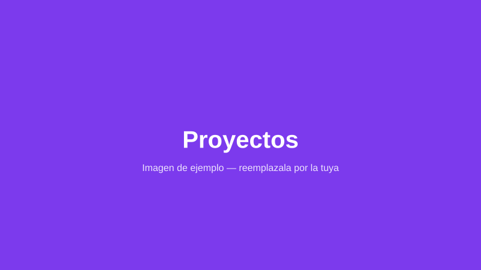

Proyectos
Lo que construí
Una selección de los proyectos en los que trabajé. Cada uno me ayudó a aprender algo nuevo.
Proyecto 1
Breve descripción del primer proyecto y las tecnologías que usaste.
Proyecto 2
Breve descripción del segundo proyecto y qué aprendiste al hacerlo.
